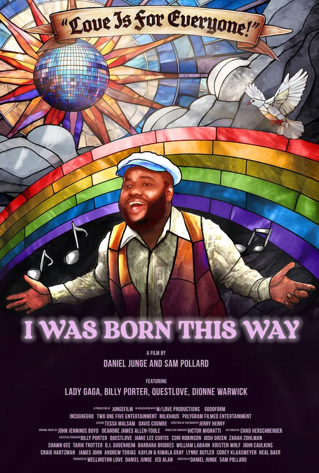

-
I was Born This Way
in development
- Editor
- Directed by Daniel Junge & Sam Pollard
- Media
Coverage

-
Searching for Amani (2024)
- Editor | Runtime 90 min.
- Directed by Nicole Gormley
- Official Selection
Tribeca Festival 2024
- Website
-
The Grab (2022)
- Assistant Editor | Runtime 90 min.
- The Center for Investigative Reporting
- Directed by Gabriela Cowperthwaite
- Edited by Davis Coombe
- Website

-
Newtok (2021)
- Assistant Editor | Runtime 93 min.
- Patagonia Films
- Directed by Andrew Burton and Michael Kirby Smith
- Edited by Davis Coombe
- Official Selection DOC NYC 2021
- Website
-
The Social Dilemma (2020)
- Assistant Editor, DIT | Runtime 94 min.
- Exposure Labs | Netflix
- Directed by Jeff Orlowski
- Edited by Davis Coombe
- 2 Primetime Emmy Award’s
- Official Selection 2020 Sundance Film
Festival
- Website